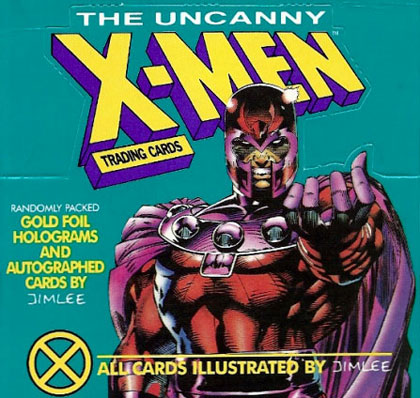
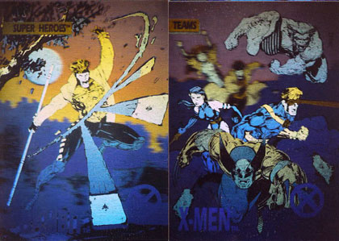

Objectifying the world
X-Men trading cards as Ruby objects
4/15/15
We've been focusing on Ruby objects this week at Dev Bootcamp. It's starting to click for me, so I'd like to share a bit of what I've learned.
Ruby's object-oriented nature makes it easy to model real-world things. The classic beginner example is creating a die object.
A normal die has 6 sides and from 1 to 6 dots on each side. If you roll a die your result is a number between 1 and 6.
Here's what that simple object looks like in Ruby:
Like I said, this is the basic example. Let's crank it up a notch.
X-Men trading card objects
X-Men trading cards are interesting real-world objects. The 1992 X-Men set by Impel contains 100 common cards and 5 rare, randomly inserted hologram cards.
You buy the cards in a pack, and a pack contains 6 cards. If I recall correctly, 1 in 9 packs had a hologram card inserted.
Let's break that down again:
- 6 random cards per pack
- 1/9 chance to get a rare card
- 100 common cards in the set
- 5 rare cards in the set
Let's translate this into a Ruby object. I see us having methods like pack#buy (fills a pack with random cards) and pack#unwrap (reveals the contents of the cards.
The tricky part will be filling the pack with cards, especially the random hologram cards.
Let's give it a try:
Holy crap, when I ran my first test of unwrapping four packs I got two hologram cards! Way too lucky! I also got a couple of the same cards in different packs, which is normal.
Here's the rest of my cards: